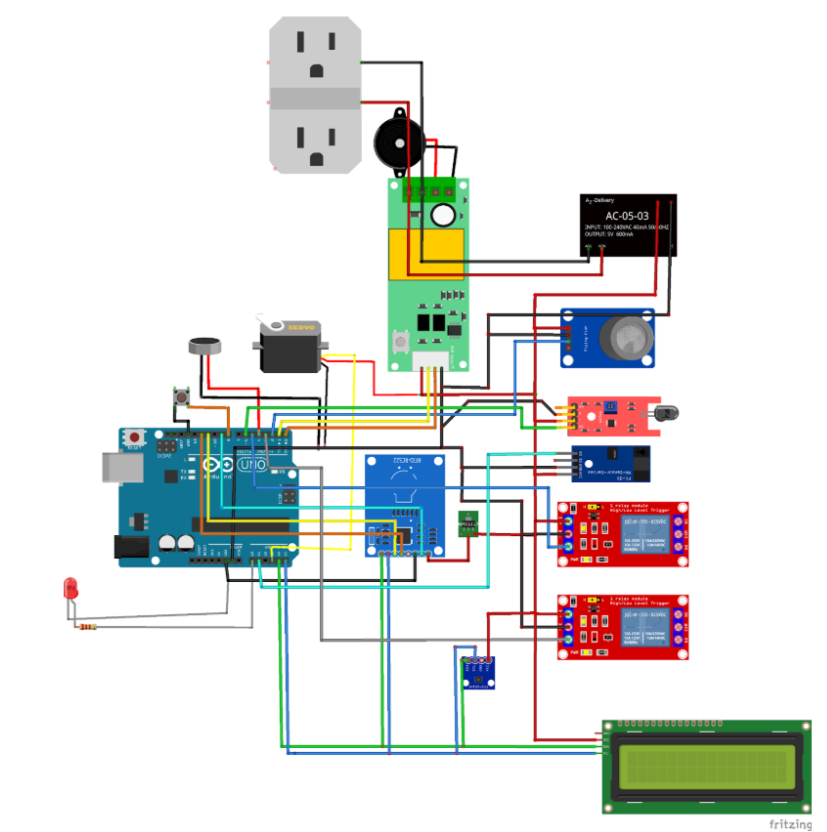

Hệ thống Nhúng · C/C++ · Kiểm thử phần cứng
Giám sát điện năng & cảnh báo an toàn
Xây dựng trạm giám sát thông số môi trường và điện năng theo thời gian thực sử dụng ATmega328P, tập trung vào gỡ lỗi logic đa luồng và toàn vẹn tín hiệu phần cứng.
Dự án này tập trung giải quyết bài toán xử lý tín hiệu đồng thời từ nhiều ngoại vi khác nhau trên một vi điều khiển đơn lõi (ATmega328P) mà không làm gián đoạn luồng thực thi cảnh báo an toàn của hệ thống.

Thay vì thiết kế hệ thống từ đầu, vai trò cốt lõi trong dự án là tham gia rà soát mã nguồn và gỡ lỗi logic điều khiển. Bằng cách áp dụng cơ chế hàm millis(), hệ thống loại bỏ được trạng thái chờ (blocking) gây ra bởi hàm delay() truyền thống, giúp vi điều khiển xử lý tín hiệu từ hệ thống cảm biến một cách mượt mà.
Quá trình tích hợp phần cứng đòi hỏi việc đấu nối và chạy thử nghiệm liên tục để đảm bảo độ tin cậy. Mục tiêu tối thượng là hệ thống ngắt relay bảo vệ phải phản hồi lập tức ngay khi các module phát hiện sự cố, đảm bảo an toàn tuyệt đối cho thiết bị điện.
| Nền tảng | Vi điều khiển ATmega328P |
|---|---|
| Ngôn ngữ | C/C++ |
| Ngoại vi | PZEM, SHT3X, MQ2, RFID |
| Trọng tâm | Rà soát mã nguồn, kiểm thử phần cứng |
| Giao thức | UART, I2C, SPI |
| Kết quả | Hệ thống phản hồi ngắt relay theo thời gian thực không bị treo |
Chi tiết công việc
01 / THỰC THIRà soát mã nguồn
Phân tích mã nguồn C/C++ để tìm kiếm các điểm nghẽn logic có thể gây treo hệ thống khi hoạt động thời gian dài.
Gỡ lỗi logic điều khiển
Vận dụng cơ chế hàm millis() để thay thế các khoảng chờ đồng bộ, giúp vi điều khiển xử lý đa tác vụ trơn tru hơn.
Đấu nối phần cứng
Tham gia thiết lập để kết nối các cảm biến đo điện năng (PZEM), môi trường (SHT3X, MQ2) và bảo mật (RFID) qua các chuẩn UART, I2C, SPI.
Chạy thử nghiệm
Trực tiếp giám sát tín hiệu đầu vào và độ trễ của hệ thống ngắt relay, đảm bảo chức năng cảnh báo hoạt động chính xác khi có sự cố giả định.
Kỹ năng đạt được
02 / KẾT QUẢ TỔNG QUANPhần cứng & Giao tiếp
- Nắm vững phương pháp đấu nối linh kiện ngoại vi vào bo mạch chủ để tránh hiện tượng nhiễu tín hiệu.
- Hiểu cơ chế thiết lập giao tiếp thông qua các chuẩn công nghiệp phổ biến (I2C, UART, SPI) tùy thuộc vào đặc tả của từng loại cảm biến.
Tư duy hệ thống
- Nâng cao kỹ năng đọc hiểu và sửa lỗi trên nền tảng mã nguồn có sẵn thay vì chỉ viết code mới.
- Hình thành tư duy kiểm thử: luôn xác nhận độ tin cậy của dữ liệu phần cứng trước khi tích hợp vào luồng điều khiển phần mềm.